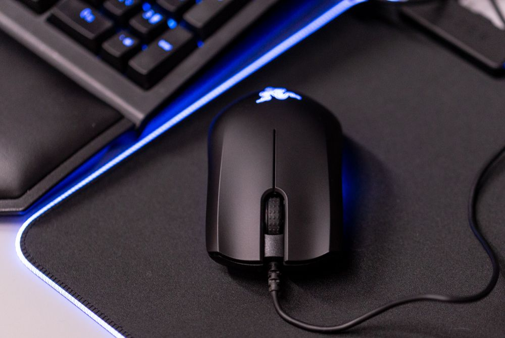
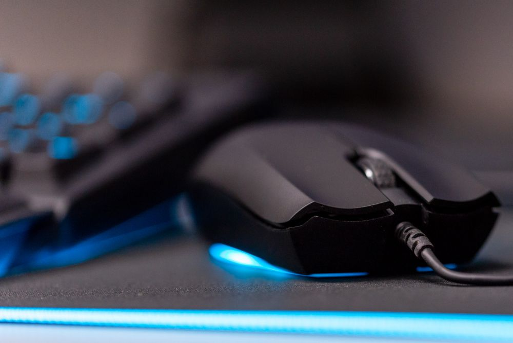

Najnowsza myszka Razera trafiła do mnie na testy przedpremierowo, więc zdążyłem spędzić z nią już kilka dni i wyrobić sobie opinię. Abyssus Essential to następca budżetowej (jak na Razera) myszki Abyssus V2. Będzie od następcy minimalnie droższa – ma kosztować ok. 200 zł gdy trafi do sklepów – ale też lepsza i, co najważniejsze, wyposażona w podświetlenie Razer Chroma.
 W ciągu ostatnich miesięcy przez moje ręce przewinęło się wiele akcesoriów Razera z wyższej półki, więc wyciągając nową myszkę z pudełka byłem ciekaw przede wszystkim tego, w jaki sposób firma ścięła koszty, aby osiągnąć niską cenę. Przyznam szczerze, że obawiałem się nieco pogorszenia jakości względem topowych produktów.
Gdzie zatem odbyło się cięcie kosztów? Przede wszystkim na etapie pakowania. Abyssus Essential nie trafia do klienta w pięknym, dopasowanym pudełku, gdzie wita nas list gratulacyjny od szefa firmy i naklejki z trójgłowym wężem. Myszka zapakowana jest w malutkie, kartonowe opakowanie, a oprócz niej w zestawie jest tylko instrukcja obsługi.
Drugim miejscem, gdzie udało się ściąć koszty, jest przewód. Zamiast typowego dla Razera, nieco grubego, plecionego kabla, mamy tu do czynienia z dość cienkim przewodem o gumowym oplocie.
W innych miejscach cięcia kosztów ani odrobinę nie czuć. Tworzywo, z którego wykonana jest myszka, ma bardzo przyjemną fakturę i sprawia wrażenie solidnego. Biorąc gryzonia do ręki czuć, że obcujemy z dobrze wykonanym produktem. Mamy też do czynienia produktem bardzo dobrze zaprojektowanym. Razer Abyssus Essential to myszka symetryczna, czyli wyprofilowana tak, żeby mogły z niej równie wygodnie korzystać osoby lewo- i praworęczne. Mysz jest dość niewielka, więc z pewnością nie będziemy jej używać kładąc nań całą dłoń, lecz raczej operując nią palcami (tzw. chwyt „claw” – szpony). W dobrym chwycie bardzo pomaga wyraźna wypukłość obudowy i wklęsłe przyciski lewo- i prawokliku. Ich wklęsłość doskonale spisuje się też przy szybkiej rozgrywce w grach, uniemożliwiając przypadkowe ześlizgnięcie się palca z przycisku.
 Nie mniej przemyślane jest kółko myszy. Nie oferuje ono co prawda żadnych bajerów, ale pokryte jest gumowanym tworzywem z wypustkami, dzięki czemu można operować nim bardzo precyzyjnie.
Poza światem gier komputerowych nowa myszka Razera ma wiele ograniczeń. Przynajmniej dla mnie, osoby, która przywykła do takich urządzeń jak Logitech MX Master 2s czy MSFT Surface Precision. Brakuje mi na niej chociażby przycisków wstecz/naprzód pod kciukiem. Jakiegokolwiek dodatkowego przycisku funkcyjnego, którym mógłbym chociażby włączyć widok zadań w Windows 10. Razer Abyssus Essential jest, nomen omen, myszką bardzo podstawową. To spora zaleta w grach, ale w codziennym użytku chciałoby się więcej.
Abyssus Essential to obecnie najtańsze akcesorium Razera wyposażone w autorskie podświetlenie Razer Chroma (nie licząc tańszej o 20 zł podkładki Goliathus Chroma, którą widzicie na zdjęciach). Firma ciekawie rozwiązała podświetlenie w tym modelu. Świeci się oczywiście logo na grzbiecie, ale też pasek LED okalający całą podstawę gryzonia. Diody umieszczone są tak, żeby odbijały światło od powierzchni. Efekt wizualny jest naprawdę przyjemny dla oka. Podświetleniem sterujemy z poziomu aplikacji Razer Synapse, gdzie możemy skonfigurować podświetlenie indywidualnie dla myszki.Nowy Razer Abyssus Essential to nie tylko podświetlenie Chroma, które dodaje myszce bonusy estetyczne, ale też dopracowana konstrukcja i nowy sensor optyczny, sięgający 7200 DPI (w V2 sensor osiąga tylko 5000 DPI). Abyssus Essential to godny następca poprzedniczki. I tak, może jest na start od niej minimalnie droższy, ale nie ma wątpliwości, że cena szybko spadnie do poziomu modelu V2. I wtedy nowy gryzoń Razera będzie jedną z najciekawszych odpowiedzi na pytanie „jaka myszka dla graczy do 200 zł”.